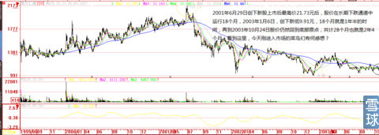
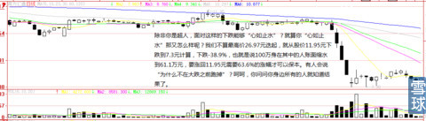
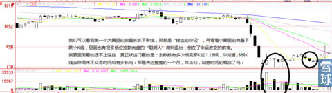
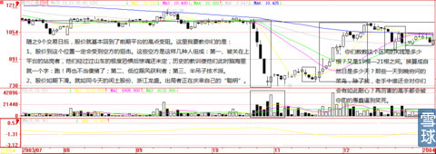
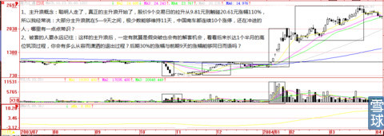

读到陈寅恪书中这句“所谓真了解者，必神思冥想，与立说之古人，处于同一境界”话时，对我自己蠢笨的心智、对英雄盲目崇拜心结犹如当头棒喝。在工作、生活的与人相处中，更加深刻的理解了那些中国古老的智慧结晶，例如：“己所不欲勿施于人、换位思考”等等，冲出自以为是禁锢后的低级而不自知的愚昧思维藩篱。
陈寅恪先生治史，重知人论世，尤注意历史人物与其生存环境之关系。在评论古人学说时，首先关注当时的历史条件与环境。“凡古人著书立说，皆有所为而发，故其所处之环境，所受之背景，非完全明了，则其学说不易评论”。研究古人思想，应具备“了解之同情”，才能评价其学说之得失是非。进而评价历史人物，则重视古人所处的时代背景。反对脱离时代实际，用今天的思想去苛求古人。他批评30年代研究“墨学”的人，“往往依其自身所遭遇的时代，所处之环境，所熏染之学说，以推测解释古人之意志。”，“则去古人学说之真相愈远，此弊至今日之谈墨学而极矣。”他以“贤愚”作为评价古人的标准，“但就贤愚判死生，未应修短论优劣”。所谓“贤愚”，实质上就是人的品格即“人品”高下。以人品论，我们不难发现刘邦身上体现的人性的自私丑恶，而从韩信身上，我们看到的则是对“义”的践诺，彰显其人格的高贵。
以上这些思维脉络的铺垫，是作为帮助本帖的看客把自己“代入当时的历史条件与环境”引子，在做技术复盘的时候，不仅不要忘记当时的市场环境、国际国内经济舆论导向、市场资金状况、股价的位置、股价的绝对价格、盘子在当时大小与今日大小随着市场资金量+参与人群的变化+参与人群时代变化后单体资金量、亏损后承受能力等等，复盘时要时时懂得把自己代入其中，一根一根数K线，一根K线就是一天的时间观念去理解。否则又是瞎子点灯白费蜡。
我第一次见识“断崖式下跌”股票前后完整过程的经历，是2003年11月3日—2004年3月19日前后长达4个多月的“000920南方汇通”。
它从2001年6月29日的最后一个交易日21.73元开始，经过长达18个月的下跌，在2003年1月6日创下9.91元新低后，又开始长达10个月的下降式平台构筑。这个时候，股价已经被腰斩有余，应该跌透了吧！要知道，它可是当时各路基金的重仓股哦，就像你们今天看到一只股票前十大股东里面全是公募基金+私募基金+QIFF基金+社保基金，是那个年代的市场宠儿，“风停的时候”照样被杀得片甲不留。
2003年10月24日这一天，股价在11.24元的位置就像被最后一根稻草所压垮一样稍微有点放量下跌-4. 09%，成交量108.17万股比上日的52.99万股增加1倍，紧接着后4天，就被连续放量大阴棒跳水方式，股价在21.73元被腰斩到11.24元位置后再几乎腰斩下跌38.9%创下新低7.3元。相对21.73元分股价打了个7折。见下图





从这一次的复盘中，我学到并指导我实战至今的精髓是：
1、股价暴跌暴跌再暴跌，就是股市最大的利好，其他全是扯淡；
2、已经这样了，还能坏道哪里去？
3、上涨与下跌一样，都需要时间，股价被腰斩需要时间，股价翻倍同样需要时间，只有傻逼才会一天到晚YY幻想今天买入明天就会天天涨停；
4、第一次认识到主力为什么要“人为故意打破低位平台“的全部要义并训练出一双识别“人为做盘痕迹”的眼睛。并且想通了“打破它就是为了未来远远的冲破这个貌似强大实则外强中干的低位平台”的全部主力操盘技术：第一、打破后才会有恐慌筹码的涌出，看看4天大阴棒后的巨幅成交就明白我的意思；第二、就算没有恐慌盘出局，待股价回到那个平台，自然就有大把的筹码倒给要买货的主力；第三、如果没有平台的打破，收集筹码的主力在原来平台往上那个吃，岂不是成本越来越高且浮动筹码越来越少？看看600120浙江东方2014年10月9日前1个月和后1个月的主力操盘手法，不是一切都真大白了吗？第四、就算主力原本期望平均成本价控制在11元，股价打到7.3元后再吃回到11元，不是正好完成主力成本价控制目标了吗？你以为大资金主力跟你一样就那么一滴滴银子，一枪就干完？一个单子就能买卖结束？所以，股价底部是一个小区域，同样的道理，头部也是一个长达1个月—3个月不等的区域。
5、没有巨大的涨幅，大资金就没有出局的空间。主力成本11元，必须把股价拉高到25元以上，再通过下跌打折的方式卖在他们本来就想卖出的区间，例如18—20元，只有这样才有被前期它主升浪时所展示的财富效应迷惑的新人“捡便宜货”的对手接盘者。与在股价底部向下打穿平台是为了吃筹同出一理（所谓的黄金坑），如此才能完成全部资金量50%—100%的盈利目标，主力的操作时空观念与散户的时空观念以及买卖手段完全不同，大资金是以年盈利多少为计算单位。股价在中低部形成的“小尖顶头部”大资金不可能出掉手中的全部筹码（他们需要的是时间），所以我才写了《小尖顶不可能是终极头部》的帖子，断言“漳泽电力”一定会风云再起（截止今日它未来的路远远还没有走完）。帖子里我都无私的写得那么详细，你们中有几人看懂过？用心去体验、揣摩过？天天去看一些屁用没有的口号式股评，不把年轻的精力用在真刀实枪的“长姿势”上，你这一辈子怎么可能有出息？怎么可能出人头地？
6、没有玩过大资金的人，永远不能理解大资金的痛苦与快乐、劣势与优势；在回头读读我上面的话，就知道我在说什么。
7、没有身处其中的散户与复盘者，永远无法理解那种巨幅亏损后的恐惧（总是在最低位放弃金子般珍贵的筹码）、大幅上涨后的忐忑（抗跌不抗涨）、对自己的否定（事到临头所有的知识和历史教训忘得一干二净）、被杀跌到心理最后一刻的崩溃、瞎猫撞上死老鼠所持股暴涨后得意忘形后没有起码的警惕懈怠（图形的主升浪都完成了还在股价的头部恋恋不舍）。就像男人无论用怎样客观的“代入式”方法，极其认真阅读女人写出来的《分娩痛苦》书籍，也永远不可能体验女人分娩那一刻真实的痛苦一样。
8、我经过前后5年不间断的置身其中刻意经受心理煎熬的无数次复盘推演，终于在2008年11月抛弃所有心灵按摩类垃圾书籍的麻醉后，自己把自己从那次巨大的人生危机中拯救出来，现在每看一次这只股票的历史痕迹，我就想起一次贝多芬的名言：我要扼住命运的咽喉。
啊程@炒的是心:只有那6到9天是主升浪，又为啥要坚守啊，它启动的第三四天进去不行嘛
炒的是心@啊程: 每天那么多涨停的股票，你去做几次体验一下不就知道了吗？看你回复的这么聪明，你应该会做很好。
 |
天上掉馅饼的稳定赚钱模式：断崖式下跌股票的操作要义炒的是心 2015-01-18 13:04:51 |
Copyright © 1996-2014 SINA Corporation All Rights Reserved.